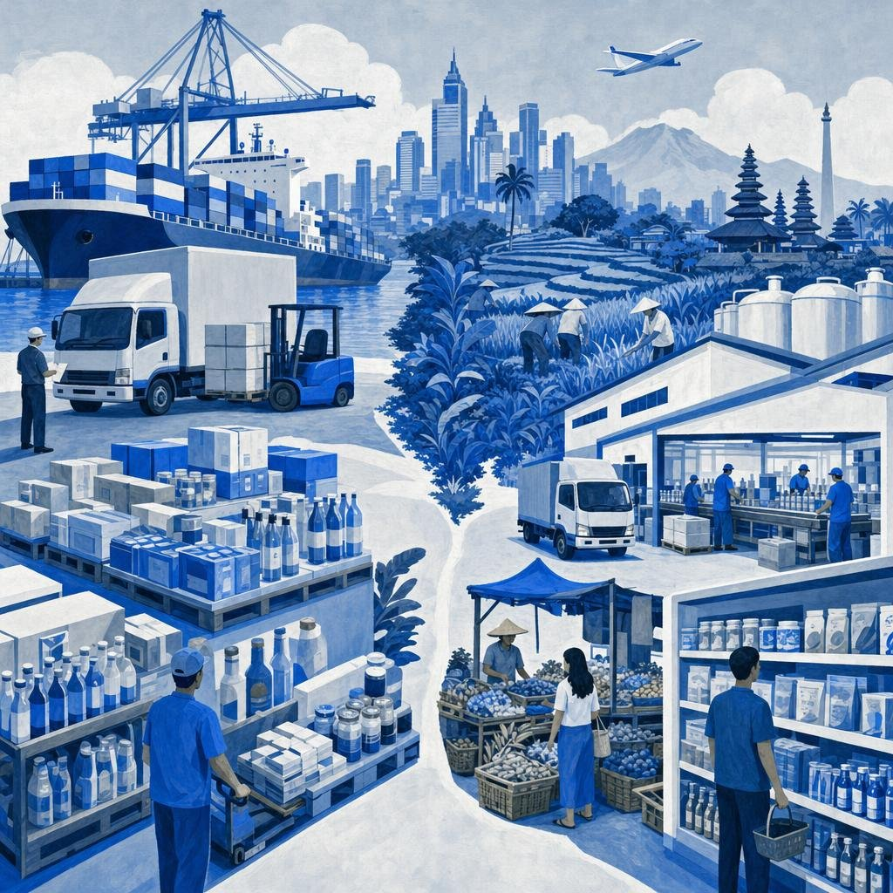

市場スキャン
インドネシア 輸入食品市場概観
輸入食品はどこでなお伸び、どこで国産品に置き換わるのか。
2026
Know first.
Move first.
Move first.

輸入食品はどこでなお伸び、どこで国産品に置き換わるのか。
本分析は2つのエビデンスに基づいています。英語・インドネシア語・日本語・韓国語によるアナリスト調査と、貿易統計・規制当局・上場企業から得た二次情報の基準値です。すべての定量的記述に出典タグを付しています。市場規模は消費者向け食品の輸入額で測定しており、小売額はこれを上回ります。
論点：輸入は4年で22%増加したが、規模に達した品目ではいずれもブランドが現地工場を建設し、輸入は縮小した。
5つの問いへの答えを一覧で示し、各行は続く章で検証します。
| 問い | エビデンスが示すこと | 日本・韓国の参入企業にとっての意味 |
|---|---|---|
| 規模と成長速度は？ | 消費者向け食品輸入は2025年にUS$9.25 bn、2020年のUS$6.29 bnから年率約8%[USDA EG 2026] [USDA EG 2025] | 絞り込んだ参入には十分な規模。2030年までは年8%ではなく約6%を前提に計画する |
| 内訳は？ | 乳製品US$1.98 bnと生鮮果実US$1.88 bnが上位。加工食品輸入は約US$6 bn。食品小売の76%は依然として伝統的小売で販売[USDA EG 2026] | 輸入品の売場はジャワ島・バリ島の近代的小売、高級スーパー、外食 |
| 2030年までの推進要因は？ | カフェ、ベーカリー、日韓料理店、無償学校給食。抑制要因はルピア、ハラール対応コスト、許認可[USDA EG 2026]。基本シナリオUS$12.4 bn[Kira estimates] | 需要は維持される一方、為替とコンプライアンスで利益率は圧迫される |
| 主導するのは誰か？ | 中国が最大の農産品供給国(US$3.9 bn)。消費者向け輸入の米国シェアは4年で9.3%から4.7%に低下[USDA EG 2026]。包装食品は現地メーカーが支配[Databoks 2025] | 日本と韓国は特定領域の供給国。大手ブランドは現地生産で勝っている |
| 外資企業が勝てる領域は？ | 業務用食材、ハラール対応プレミアム菓子、ソース・調味料が最高評価[Kira estimates] | 認証を取得し、輸入業者を選び、外食で足場を築き、規模に達したら現地生産化する |
2022年のピークは価格主導(乳製品・穀物コスト)であり、2025年の過去最高は果実、牛肉、カカオ製品によるものです。
小売業者と外食事業者は直接輸入ができず、すべての輸入品はまず認可輸入業者を経由します。
輸入食品を購入する顧客層は5つあり、うち2つは事業者です。
| 顧客層 | 規模 | 購入品 | 経路 |
|---|---|---|---|
| 中上位・富裕世帯 | 中間層は2025年に4,670万人、4,790万人から減少[USDA EG 2026] | チーズ、果実、牛肉、菓子、贈答品 | 高級スーパー、スーパー、オンライン |
| 中間層予備軍 | 人口の半数超、2024年以降450万人増[USDA EG 2026] | 手頃なプレミアム品、小容量 | コンビニ、ミニマーケット、EC |
| 外食事業者 | US$30 bn規模、東南アジア最大[USDA EG 2026] | チーズ、クリーム、バター、牛肉、フライドポテト、ソース | 輸入業者・卸売業者 |
| 食品加工業者 | US$101 bn規模の産業、原料の約65%が輸入[USDA FPI 2026] | 粉乳、ホエイ、カカオ、小麦 | 直接輸入または輸入業者 |
| 無償学校給食(MBG) | 2026年9月時点で受益者5,700万人、2026年予算Rp335 tn[Katadata Oct 2026] [Bisnis Aug 2025] | 牛乳、卵、主食。国産優先 | 政府給食拠点(SPPG) |
中核の買い手は縮小している。中間層は2024年までの5年間で約950万人減少しました[USDA EG 2025]。プレミアム商品の購買は、より小さく富裕な層に依存しています。
成長する買い手は外食である。コーヒー・紅茶チェーン、ベーカリーカフェ、日本料理・韓国料理店がチーズ、クリーム、牛肉の需要を牽引しています[USDA EG 2026]。
買い物客の大多数はムスリムであり、駐在員・華人系の中核層を超えて販路を広げられるかはハラール対応で決まります。
品目別の金額。たばことペットフードはグラフから除外していますが、合計には含めています。
2品目が輸入額を支えている。乳製品と生鮮果実でUS$3.86 bn、合計US$9.25 bnの42%を占め、牛肉を加えると53%に達します[USDA EG 2026]。
乳製品は売場商品というより原料である。乳製品の約80%が輸入で、その多くは加工業者やカフェ向けの粉乳、ホエイ、チーズです[USDA EG 2025]。
ブランドが競うのは裾野の品目である。菓子、ソース、甘味ビスケット、アイスクリームは成長上位10品目に入っています[USDA EG 2026]。
輸入食品はどこでなお伸び、どこで国産品に置き換わるのか。分かれ目は需要ではなく国内供給にあります。
伸び続ける品目：インドネシアにない原料です。カフェ向けコーヒー、カカオ、ナッツ、フライドポテト(加工適性のあるジャガイモがない)は60〜163%増加しました[USDA EG 2026]。
国産に置き換わった品目：飲料、ペットフード、生鮮野菜は国内の工場・農場の拡大で減少しました。乳製品は無償学校給食が国産牛乳を後押しするなか、5%増にとどまっています[USDA EG 2025]。
導かれる法則：輸入は供給が構造的に不足する領域で伸び、品目が現地工場の採算規模を超えると縮小します[Kira estimates]。
現地生産化の分岐線：数量が工場を支えられる水準に達すれば、ハラール管理、関税、ルピア安のいずれもが現地生産に有利に働きます。
需要は旧正月とレバランにピークを迎えます。輸入推薦の取得に2ヶ月超かかると、両方を逃しかねません。
価格帯とチャネルは連動します。高級スーパーは品揃えを担い、コンビニが扱うのは数品目にとどまります。
| 業態 | 事例 | 規模 | 役割 |
|---|---|---|---|
| 高級スーパー | Ranch Market、Farmers Market、Grand Lucky、Kem Chicks、The FoodHall、Pepito[USDA EG 2026] | Ranch Marketグループ売上は2024年Rp2.87 tn[Fortune IDN 2025] | 輸入品の品揃えが最も厚い。ジャカルタ、バリ |
| 日系・韓国系チェーン | AEON(2026年5月時点14店)、Lotte Mart[AEON 2026] [USDA EG 2026] | AEON：取扱品目の約20%が輸入品[AEON 2026] | 日韓ブランドの自然な受け皿 |
| スーパー・ハイパーマーケット | Superindo、Hypermart、Transmart、Lotte Mart。1,829店[USDA EG 2025] | 大衆〜準高級。店舗数の伸びは緩慢 | ジャワ島中心 |
| コンビニ | 48,000店超。Alfamartは2025年末で21,120店[USDA EG 2026] [Investortrust 2026] | 輸入品は少数：菓子、飲料、果実 | 全国展開、ジャワ島外へ拡大 |
| オンライン食品販売 | 食品ECは約US$5 bn[USDA EG 2026]。Shopee、Alfagift、Klik Indomaret、GrabMart[Ken Research 2025] | US$100未満の越境販売は禁止 | 国内在庫のみ |
まずジャワ島とバリ島。インドネシア人の56%がジャワ島に住み、ジャカルタとバリが輸入食品の主要な玄関口です[USDA EG 2026]。
次の都市：スラバヤ、バンドン、メダン、マカッサルで高級業態の出店が進んでいます[USDA EG 2026]。AEONは2025年にバンドンとスマランへ進出しました[AEON 2026]。
オンラインには国内在庫が必要：単価US$100未満の越境出品は禁止されています[Kontan Oct 2023]。
汎用品に近い品目では関税条件と距離が供給国シェアを決め、ブランドが効くのはプレミアムの裾野に限られます。
自由貿易協定を持つ供給国が伸びている。オーストラリアとニュージーランドは低関税と短い輸送期間で乳製品・牛肉を主導し、中国はRCEPの下で果実と、いまやフライドポテトでも首位です[USDA EG 2026]。
米国は後退：市場が拡大するなか、4年でUS$705 mからUS$439 mに減少しました[USDA EG 2026]。
供給の集中は全体ではなく品目単位です。果実は単一の原産国が約4分の3を占め、牛肉はオーストラリアが支配しています[USDA EG 2026]。
韓国の出荷額は日本を上回ります。両国とも特定領域の供給国であり、いまやハラール対応の遅れが最大の制約です。
日本：2025年は¥17.3 bnで輸出先中17位、上位品目はイワシ、ホタテ、錦鯉です[MAFF 2026]。加工食品(¥4.7 bn、約US$30 m)は、インドネシアの加工食品輸入約US$6 bnの1%未満です[Kira estimates]。
韓国：農産物・食品輸出は2023年にUS$246 m[Korea Times Dec 2024]、2024年9月までで+3.3%[MAFRA 2024]。2024年末時点で主要韓国製品1,412品のうちハラール認証取得は252品のみでした[Korea Times Dec 2024]。
存在感を担うのは貿易ではなくブランド：インドネシアは三養食品の東南アジア売上の約25%を占めます[JoongAng 2024]。
輸入品が競うのはプレミアムの裾野であり、大衆向け売場は現地メーカーと2大コンビニチェーンのものです。
| 階層 | 集中度 |
|---|---|
| コンビニ | IndomaretとAlfamartがコンビニ売上の92%を占有[USDA EG 2025] |
| 包装食品 | 現地企業と長年現地化した多国籍企業が主導。輸入ブランドはプレミアムの裾野 |
| 輸入 | 断片的：多くの輸入業者が複数の関連認可会社を運営 |
| 供給国 | 品目単位で集中：果実は中国、牛肉はオーストラリア、乳製品はオセアニア |
税関規則上、荷受人の変更や再輸出は極めて難しく、最初の輸入業者の選択はほぼ恒久的なものとなります。
店頭価格はCIFの約2.0〜2.3倍。RCEPや二国間協定の対象品目の多くは関税が低く、倍率を押し上げるのは関税ではなく流通利益です[Kira estimates]。
コンプライアンスは固定費である。登録、ハラール、ラベルの負担は小規模SKUほど重く、認証取得には3〜5ヶ月かかります[Dailian Jun 2026]。
為替も上乗せされる：2026年9月のルピアは1US$=Rp17,500〜17,900で、2025年平均のRp16,430を下回っています[JISDOR Sep 2026] [BI 2025]。
韓国は7月に27名の支援チーム(化粧品主導)を派遣し、9月にはハラール機関と食品・化粧品に関するMoUを締結しました。
認証は供給者ごとに3〜5ヶ月を要するプロジェクトです。費用は固定的なため、売れ筋SKUに絞った品揃えが有利になります。
| 規則 | 要件 | 期間または費用 | 輸入食品への影響 |
|---|---|---|---|
| 輸入食品のハラール義務化(2026年10月18日から) | BPJPHが承認し、販売前に登録された認証書[PP 42/2024] [BPJPH WTO 2025] | 認証取得に3〜5ヶ月 | 未認証SKUはムスリム多数派への販路を失う |
| NON HALAL表示(規則3/2026) | 外装に赤枠の「NON HALAL」または「MENGANDUNG BABI」表示。流通在庫は12ヶ月の移行期間[BPJPH Reg 3/2026] | 貼り替えまたは新包装 | 韓国の報道は売場区画の分離を伝える[Dailian Jun 2026]。規則本文が定めるのは表示であり棚ではない |
| 海外ハラール保証(規則4/2026) | 指定機関による出荷前の書類・現物検査、税関申告との連動[BPJPH Reg 4/2026] | 検査費用が追加 | 相互承認対象機関の認証を持つ供給者が有利 |
| 相互承認 | 39ヶ国の機関と109件の協定[Chambers 2026]。2024年までに海外製品82,407品が認証、うち中国38,475品[Hukumonline 2024] | 機関が承認済みなら低減 | 認証機関の適用範囲が当該品目を含むか確認する |
| BPOM登録と輸入許可 | 製品ごとのML番号、輸入業者の許可、乳製品・牛肉・果実の承認[USDA EG 2026] | 数ヶ月、割当の時期 | 許可遅延で旧正月とレバランのピークを逃しうる |
推進要因4つと抑制要因4つ。その均衡が品目ごとに異なるため、市場は二分されます。
| 要因 | 強度 | 輸入への影響 |
|---|---|---|
| 外食の成長(カフェ、ベーカリー、日韓料理) | +5 | 増加 |
| 無償学校給食(MBG)：乳製品・たんぱく質需要 | +3 | 増加、国産優先 |
| 構造的不足：乳製品、小麦、牛肉、果実 | +4 | 増加 |
| RCEPと二国間協定による関税引き下げ | +3 | 増加、原産国が移行 |
| ルピア安(Rp17,500超、2025年平均16,430) | −4 | 2026-27年に減少 |
| ハラール規制の執行と出荷前検査 | −4 | 未認証品は減少 |
| 現地生産による輸入の大規模な代替 | −4 | 大衆向け商品で減少 |
| 中間層の圧迫 | −3 | プレミアム品で減少 |
最も強い牽引役は外食である。US$30 bn規模の同部門では、コーヒー、紅茶、ベーカリーのチェーンが増え続けています[USDA EG 2026]。
学校給食は乳製品を後押しするが、国産が優先：所管機関は酪農地域を優先し、乳牛の輸入を計画しています[USDA EG 2025]。支出は2026年9月までにRp153 tnに達しました[Katadata Oct 2026]。
抑制要因は早期に効く：為替とハラール対応コストは2026-27年に重くのしかかり、現地生産化は期間を通じて大衆向け商品を圧迫します[Kira estimates]。
幅を生むのは3つの前提です：ルピア、ハラール通関の速度、学校給食用乳製品の輸入比率。
基本、約6%：外食と供給不足は維持され、ルピアは2027年までに安定し、認証の普及に伴いハラール対応の摩擦は薄れます[Kira estimates]。
低位、約3%：ルピア安が続き、出荷前検査が通関を遅らせ、現地生産化する商品が増えます。輸入が横ばいだった2022-24年に近い姿です。
高位、約9%：学校給食が乳製品輸入を押し上げ、RCEP関税の引き下げが続きます。2020-22年のペースに相当します。
セグメントは、日本・韓国の食品企業が海外から供給しうる製品と買い手の組み合わせです。
| セグメント | 規模 | 成長 | 余地 | 規則適合 | 勝てる力 | 平均 |
|---|---|---|---|---|---|---|
| 業務用食材(チーズ、ソース、調味料) | 4 | 5 | 4 | 4 | 4 | 4.2 |
| プレミアム菓子・製菓 | 3 | 4 | 3 | 3 | 5 | 3.6 |
| ソース・調味料(小売) | 2 | 3 | 4 | 4 | 5 | 3.6 |
| カフェ向けコーヒー・紅茶・カカオ原料 | 3 | 5 | 3 | 4 | 2 | 3.4 |
| 飲食店向け高級牛肉・水産物 | 4 | 4 | 3 | 2 | 3 | 3.2 |
| 贈答用高級生鮮果実 | 4 | 5 | 2 | 2 | 3 | 3.2 |
| バルク粉乳 | 5 | 2 | 1 | 3 | 1 | 2.4 |
| 大衆向け包装食品(麺、飲料) | 3 | 1 | 1 | 3 | 2 | 2.0 |
業務用食材が首位：最も成長の速い買い手で、仕様主導かつ一度採用されれば継続性が高く、日本料理・韓国料理の店舗も広がっています[USDA EG 2026]。
菓子とソース：規模は中程度ですが、日韓ブランドがプレミアムを取れる領域です。関門は認証です。
バルク乳製品と大衆向け商品は最低評価：オセアニアの関税優位と現地工場がすでに価格を決めています[USDA EG 2026]。
魅力度は市場側の要素、勝てる力は日本・韓国の供給者にとっての規則適合とブランド優位です。
今すぐ参入：業務用食材、プレミアム菓子、ソース、カフェ向け原料。認証取得が可能で仕様主導、かつ日韓産が評価される領域です。
提携または待機：高級牛肉、水産物、果実は魅力的ですが、現地パートナーが保有するハラール屠畜や輸入承認が必要です。
回避：バルク乳製品と大衆向け包装食品。オセアニアの関税優位と現地工場がコストで勝ります[Kira estimates]。
各条件には、最初の6ヶ月に予算のごく一部で実施できる検証方法があります。
| 勝つための条件 | 確度 | 検証方法 |
|---|---|---|
| 上位20〜30 SKUがBPJPH承認機関のハラール認証を取得 | 高：相互承認協定は109件存在[Chambers 2026] | 申請前に認証機関と製品範囲を確認。3〜5ヶ月[Dailian Jun 2026] |
| 許可、コールドチェーン、高級店取扱を持つ独占輸入業者 | 中：輸入業者は多いが実態が見えにくい[USDA EG 2026] | 許可、小売2〜3社からの評判、支払履歴を確認。L/Cでの試験出荷 |
| CIFの約2.2倍で現地プレミアム価格帯に収まる陸揚げ価格 | 中：ルピアは2025年比約8%下落[JISDOR Sep 2026] | 値付け前に高級店5店で類似20 SKUの店頭調査 |
| 初年度に30件超の外食中核取引先 | 中〜高：カフェと日韓料理店が増加[USDA EG 2026] | 卸売業者経由で50店にサンプルを先行販売。成約率60%を目標 |
| 規模に達した商品の現地委託生産への道筋 | 中：現地生産化は市場の定型パターン[USDA FPI 2026] | 1 SKUが数量基準を超えた時点でハラール対応の委託生産先を絞り込む |
輸入食品の参入を左右する要素で5つの参入経路を評価しました。評価は本レポートのエビデンスに基づく当社の判断です[Kira estimates]。
| 参入経路 | 販路の広さ | 収益化の速さ | リスク資本 | 規則適合 |
|---|---|---|---|---|
| 任意の輸入業者経由で輸出を継続。未認証でNON HALAL表示 | 非ハラール区画 | 即時 | 低 | 販路が縮小 |
| 上位SKUを認証、独占輸入業者、高級小売＋外食 | ジャワ、バリ | 6〜9ヶ月 | パイロット US$1 m未満 | 認証済み |
| 卸売業者経由で外食向け食材のみ供給 | B2Bのみ | 3〜6ヶ月 | 低 | ハラールは必要 |
| インドネシアの消費者へ越境オンライン販売 | US$100下限 | 下限未満は禁止 | ||
| 現地生産または委託生産を即時開始 | 大衆市場に到達 | 2〜3年 | 工場の設備投資 | 現地ハラール |
認証と提携：ハラール対応20〜30 SKU、独占輸入業者1社、ジャカルタとバリの高級小売＋外食。
外食を並行して展開し、最速の収益源かつ最良の需要シグナルとします。
判断を変える要因：主に駐在員・華人系に売れる商品はNON HALAL表示のままでよく、規模に達した商品は委託生産へ移行します。
8つのリスクを2028年までの発生可能性と認証済み輸入による参入への影響度で配置し、深刻度をセルの濃淡で示しています[Kira estimates]。
4つのゲートにそれぞれ予算と検証を設けます。予算は20〜30 SKUの品揃えに必要な認証、登録、サンプル、棚代、初回在庫を含みます[Kira estimates]。
| ゲート | 実施内容 | 予算 | 期間 | 可否判断の基準 |
|---|---|---|---|---|
| G0 · 認証と選定 | 承認済み機関を通じた20〜30 SKUのハラール申請、輸入業者のデューデリジェンス、BPOM登録[BPJPH Reg 4/2026] | US$0.15-0.3 m | 2026年Q4〜2027年Q2 | 認証書とML番号を取得済み。撤退条件付きの独占輸入契約 |
| G1 · パイロット | ジャカルタとバリ：高級店30〜50店、AEONと日韓系チェーン、外食取引先30件超 | US$0.5-0.8 m | 12ヶ月 | 初回注文の消化率70%以上、外食取引先の60%以上からリピート注文。40%未満なら中止[Kira estimates] |
| G2 · 拡大 | スラバヤ、バンドン、メダン。国内在庫による公式オンラインストア、第2の品目 | US$1-2 m | 2028 | 輸入業者の売上が年換算US$3 m超、販促費が売上の15%未満 |
| G3 · 現地生産化 | 規模に達した商品をハラール対応の委託生産または現地パートナー工場へ | 個別判断 | 2029-2030 | 委託生産ラインを埋める数量を持つSKU群が1つ |
認可輸入業者から売場、カフェまで、インドネシア輸入食品の価値連鎖を構成する企業。小売業者と外食事業者は直接輸入できないため、輸入業者が関門となります。規模は出典で確認できる場合のみ記載しています。
本分析は英語・インドネシア語・日本語・韓国語のエビデンスを三角測量しています。数値に出典名のタグ(例：[USDA EG 2026])がある場合、データはその出典によるもので、完全な引用は下記のとおりです。[Kira estimates]が付された数値は、KIRAのアナリストが開示された入力値から各ページに示した手法で導出したもので、価格構成、2030年シナリオ、セグメント評価、貿易統計から算出したシェアが該当します。市場規模は小売売上ではなく、消費者向け食品の輸入額(米国農務官の分類、Trade Data Monitorのデータ)です。2026年10月初旬までのデスク調査のみに基づき、インタビューや店舗調査は実施していません。
出典一覧(続き)。
本レポートが市場と今後の意思決定についての明確な視座となれば幸いです。さらなる議論、個別調査、協業の機会については、弊社のリサーチチームまでお問い合わせください。
結論が条件付きである理由
市場は実在する。消費者向け食品輸入は2025年にUS$9.25 bnに達し、2024年比8%増、2021年比22%増となっています[USDA EG 2026]。
成長は選択的である。コーヒー、チョコレート、ナッツの輸入は2021年以降で倍増またはそれに近い水準となった一方、飲料とペットフードは現地工場への代替により縮小しました[USDA EG 2026]。
参入要件は今まさに上がる。2026年10月18日から輸入食品にハラール認証が義務化され[PP 42/2024]、ルピアは2025年平均比で約8%下落しています[JISDOR Sep 2026]。